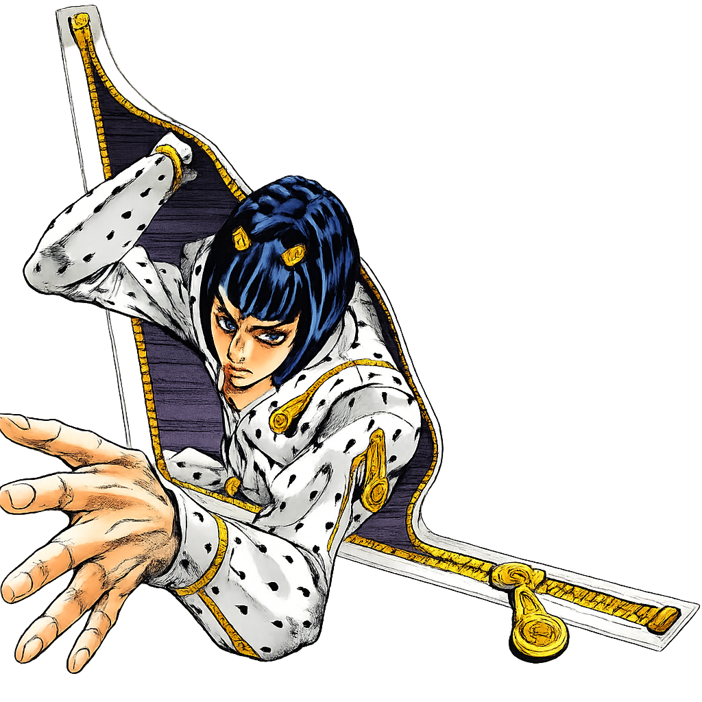

Os Jogos de JoJo's Bizarre Adventure

O sucesso de JoJo's Bizarre Adventure não se limitou aos mangás e animes. Ao longo dos anos, a franquia recebeu diversas adaptações para os videogames, abrangendo diferentes gêneros e plataformas. Alguns títulos buscaram recriar fielmente os acontecimentos da obra original, enquanto outros apostaram em histórias inéditas e encontros impossíveis entre personagens de diferentes gerações.
Entre todos os jogos lançados, três se destacam por sua popularidade e importância para a comunidade de fãs: Heritage for the Future, considerado um clássico dos jogos de luta; Eyes of Heaven, conhecido por sua história original e grande elenco; e All-Star Battle R, a adaptação moderna que reúne personagens de praticamente todas as partes da série em batalhas espetaculares.
JoJo's Bizarre Adventure: Heritage for the Future
Lançado originalmente nos arcades pela Capcom em 1998, Heritage for the Future é considerado por muitos fãs o jogo mais icônico da franquia. Baseado nos acontecimentos de Stardust Crusaders, o título foi responsável por introduzir muitos jogadores ao universo de JoJo muito antes da popularização mundial do anime.
O jogo utiliza um sistema de luta bidimensional inspirado nos clássicos da Capcom, mas adiciona uma mecânica inovadora para a época: os Stands. Durante as batalhas, os personagens podem invocar suas manifestações espirituais para ampliar ataques, criar novas estratégias ou aumentar seu alcance ofensivo e defensivo.
Além da excelente jogabilidade, Heritage for the Future ficou conhecido por suas animações detalhadas, trilha sonora marcante e fidelidade ao material original. Muitos golpes especiais reproduzem cenas famosas do mangá, tornando cada combate uma verdadeira homenagem à obra de Hirohiko Araki.
Mesmo décadas após seu lançamento, o jogo continua sendo disputado por comunidades dedicadas ao gênero de luta. Seu equilíbrio competitivo e profundidade mecânica garantiram um lugar permanente entre os títulos mais respeitados da história dos jogos de anime.
JoJo's Bizarre Adventure: Eyes of Heaven
Lançado em 2015 para PlayStation 3 e PlayStation 4, Eyes of Heaven trouxe uma proposta bastante diferente dos jogos anteriores da franquia. Em vez de focar exclusivamente em lutas tradicionais, o título apresenta arenas tridimensionais amplas e combates em dupla, permitindo que personagens de diferentes partes lutem lado a lado.
Um dos maiores atrativos do jogo é sua história original, supervisionada pelo próprio Hirohiko Araki. A narrativa reúne heróis e vilões de diversas épocas em uma aventura envolvendo viagens temporais e ameaças capazes de alterar o destino do universo de JoJo.
Essa premissa possibilita encontros inéditos entre personagens que jamais se encontraram na obra principal. Ver Jonathan Joestar lutando ao lado de Jotaro Kujo ou Giorno Giovanna enfrentando antagonistas de outras partes é um dos grandes destaques da experiência.
Embora sua jogabilidade tenha dividido opiniões entre os jogadores mais competitivos, Eyes of Heaven é amplamente elogiado pelo enorme elenco disponível, pela quantidade de referências ao mangá e pela oportunidade de explorar cenários inspirados em momentos clássicos da série.
JoJo's Bizarre Adventure: All-Star Battle R
Lançado em 2022, All-Star Battle R representa a evolução moderna dos jogos de luta da franquia. Desenvolvido pela CyberConnect2 e publicado pela Bandai Namco Entertainment, o título é uma versão aprimorada do All-Star Battle lançado originalmente para PlayStation 3 em 2013.
Seu principal diferencial é reunir personagens de praticamente todas as partes de JoJo's Bizarre Adventure em um único jogo. O elenco ultrapassa cinquenta lutadores, incluindo protagonistas, antagonistas e personagens secundários extremamente populares entre os fãs.
Visualmente, o jogo procura reproduzir o estilo artístico de Hirohiko Araki com grande fidelidade. As poses exageradas, os efeitos visuais coloridos e os golpes especiais inspirados diretamente no mangá fazem com que cada batalha pareça uma cena retirada da obra original.
Além dos modos de luta tradicionais, All-Star Battle R oferece desafios, batalhas especiais e diversos conteúdos desbloqueáveis. Graças às melhorias gráficas, ao refinamento da jogabilidade e ao extenso elenco, o título é considerado por muitos a experiência definitiva para quem deseja vivenciar o universo de JoJo nos videogames.